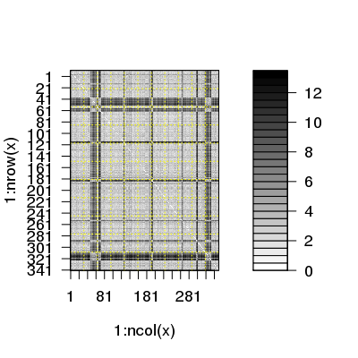

read.dcd(trjfile, big = FALSE, verbose = TRUE, cell = FALSE)
Read coordinate data from a binary DCD trajectory file.
Reads a CHARMM or X-PLOR/NAMD binary trajectory file with either big- or little-endian storage formats.
Reading is accomplished with two different sub-functions:
dcd.header, which reads header info, and dcd.frame, which
takes header information and reads atoms frame by frame producing an
nframes/natom*3 matrix of cartesian coordinates or an nframes/6 matrix
of cell parameters.
A numeric matrix of xyz coordinates with a frame/structure per row and a Cartesian coordinate per column or a numeric matrix of cell information with a frame/structure per row and lengths and angles per column.
Grant, B.J. et al. (2006) Bioinformatics 22, 2695--2696.
See CHARMM documentation for DCD format description.
If you experience problems reading your trajectory file with read.dcd() consider first reading your file into VMD and from there exporting a new DCD trajectory file with the 'save coordinates' option. This new file should be easily read with read.dcd().
Error messages beginning 'cannot allocate vector of size' indicate a failure to obtain memory, either because the size exceeded the address-space limit for a process or, more likely, because the system was unable to provide the memory. Note that on a 32-bit OS there may well be enough free memory available, but not a large enough contiguous block of address space into which to map it. In such cases try setting the input option 'big' to TRUE. This is an experimental option that results in a 'big.matrix' object.
##-- Read cell parameters from example trajectory file trtfile <- system.file("examples/hivp.dcd", package="bio3d") trj <- read.dcd(trtfile, cell = TRUE)NATOM = 198 NFRAME= 351 ISTART= 0 last = 351 nstep = 351 nfile = 351 NSAVE = 1 NDEGF = 0 version 24 Reading (x100) | | | 0% | | | 1% | |= | 1% | |= | 2% | |== | 2% | |== | 3% | |=== | 4% | |=== | 5% | |==== | 5% | |==== | 6% | |===== | 7% | |===== | 8% | |====== | 8% | |====== | 9% | |======= | 9% | |======= | 10% | |======= | 11% | |======== | 11% | |======== | 12% | |========= | 12% | |========= | 13% | |========== | 14% | |========== | 15% | |=========== | 15% | |=========== | 16% | |============ | 17% | |============ | 18% | |============= | 18% | |============= | 19% | |============== | 19% | |============== | 20% | |============== | 21% | |=============== | 21% | |=============== | 22% | |================ | 22% | |================ | 23% | |================= | 24% | |================= | 25% | |================== | 25% | |================== | 26% | |=================== | 27% | |=================== | 28% | |==================== | 28% | |==================== | 29% | |===================== | 29% | |===================== | 30% | |===================== | 31% | |====================== | 31% | |====================== | 32% | |======================= | 32% | |======================= | 33% | |======================== | 34% | |======================== | 35% | |========================= | 35% | |========================= | 36% | |========================== | 37% | |========================== | 38% | |=========================== | 38% | |=========================== | 39% | |============================ | 39% | |============================ | 40% | |============================ | 41% | |============================= | 41% | |============================= | 42% | |============================== | 42% | |============================== | 43% | |=============================== | 44% | |=============================== | 45% | |================================ | 45% | |================================ | 46% | |================================= | 47% | |================================= | 48% | |================================== | 48% | |================================== | 49% | |=================================== | 49% | |=================================== | 50% | |=================================== | 51% | |==================================== | 51% | |==================================== | 52% | |===================================== | 52% | |===================================== | 53% | |====================================== | 54% | |====================================== | 55% | |======================================= | 55% | |======================================= | 56% | |======================================== | 57% | |======================================== | 58% | |========================================= | 58% | |========================================= | 59% | |========================================== | 59% | |========================================== | 60% | |========================================== | 61% | |=========================================== | 61% | |=========================================== | 62% | |============================================ | 62% | |============================================ | 63% | |============================================= | 64% | |============================================= | 65% | |============================================== | 65% | |============================================== | 66% | |=============================================== | 67% | |=============================================== | 68% | |================================================ | 68% | |================================================ | 69% | |================================================= | 69% | |================================================= | 70% | |================================================= | 71% | |================================================== | 71% | |================================================== | 72% | |=================================================== | 72% | |=================================================== | 73% | |==================================================== | 74% | |==================================================== | 75% | |===================================================== | 75% | |===================================================== | 76% | |====================================================== | 77% | |====================================================== | 78% | |======================================================= | 78% | |======================================================= | 79% | |======================================================== | 79% | |======================================================== | 80% | |======================================================== | 81% | |========================================================= | 81% | |========================================================= | 82% | |========================================================== | 82% | |========================================================== | 83% | |=========================================================== | 84% | |=========================================================== | 85% | |============================================================ | 85% | |============================================================ | 86% | |============================================================= | 87% | |============================================================= | 88% | |============================================================== | 88% | |============================================================== | 89% | |=============================================================== | 89% | |=============================================================== | 90% | |=============================================================== | 91% | |================================================================ | 91% | |================================================================ | 92% | |================================================================= | 92% | |================================================================= | 93% | |================================================================== | 94% | |================================================================== | 95% | |=================================================================== | 95% | |=================================================================== | 96% | |==================================================================== | 97% | |==================================================================== | 98% | |===================================================================== | 98% | |===================================================================== | 99% | |======================================================================| 99% | |======================================================================| 100%##-- Read coordinates from example trajectory file trj <- read.dcd(trtfile)NATOM = 198 NFRAME= 351 ISTART= 0 last = 351 nstep = 351 nfile = 351 NSAVE = 1 NDEGF = 0 version 24 Reading (x100) | | | 0% | | | 1% | |= | 1% | |= | 2% | |== | 2% | |== | 3% | |=== | 4% | |=== | 5% | |==== | 5% | |==== | 6% | |===== | 7% | |===== | 8% | |====== | 8% | |====== | 9% | |======= | 9% | |======= | 10% | |======= | 11% | |======== | 11% | |======== | 12% | |========= | 12% | |========= | 13% | |========== | 14% | |========== | 15% | |=========== | 15% | |=========== | 16% | |============ | 17% | |============ | 18% | |============= | 18% | |============= | 19% | |============== | 19% | |============== | 20% | |============== | 21% | |=============== | 21% | |=============== | 22% | |================ | 22% | |================ | 23% | |================= | 24% | |================= | 25% | |================== | 25% | |================== | 26% | |=================== | 27% | |=================== | 28% | |==================== | 28% | |==================== | 29% | |===================== | 29% | |===================== | 30% | |===================== | 31% | |====================== | 31% | |====================== | 32% | |======================= | 32% | |======================= | 33% | |======================== | 34% | |======================== | 35% | |========================= | 35% | |========================= | 36% | |========================== | 37% | |========================== | 38% | |=========================== | 38% | |=========================== | 39% | |============================ | 39% | |============================ | 40% | |============================ | 41% | |============================= | 41% | |============================= | 42% | |============================== | 42% | |============================== | 43% | |=============================== | 44% | |=============================== | 45% | |================================ | 45% | |================================ | 46% | |================================= | 47% | |================================= | 48% | |================================== | 48% | |================================== | 49% | |=================================== | 49% | |=================================== | 50% | |=================================== | 51% | |==================================== | 51% | |==================================== | 52% | |===================================== | 52% | |===================================== | 53% | |====================================== | 54% | |====================================== | 55% | |======================================= | 55% | |======================================= | 56% | |======================================== | 57% | |======================================== | 58% | |========================================= | 58% | |========================================= | 59% | |========================================== | 59% | |========================================== | 60% | |========================================== | 61% | |=========================================== | 61% | |=========================================== | 62% | |============================================ | 62% | |============================================ | 63% | |============================================= | 64% | |============================================= | 65% | |============================================== | 65% | |============================================== | 66% | |=============================================== | 67% | |=============================================== | 68% | |================================================ | 68% | |================================================ | 69% | |================================================= | 69% | |================================================= | 70% | |================================================= | 71% | |================================================== | 71% | |================================================== | 72% | |=================================================== | 72% | |=================================================== | 73% | |==================================================== | 74% | |==================================================== | 75% | |===================================================== | 75% | |===================================================== | 76% | |====================================================== | 77% | |====================================================== | 78% | |======================================================= | 78% | |======================================================= | 79% | |======================================================== | 79% | |======================================================== | 80% | |======================================================== | 81% | |========================================================= | 81% | |========================================================= | 82% | |========================================================== | 82% | |========================================================== | 83% | |=========================================================== | 84% | |=========================================================== | 85% | |============================================================ | 85% | |============================================================ | 86% | |============================================================= | 87% | |============================================================= | 88% | |============================================================== | 88% | |============================================================== | 89% | |=============================================================== | 89% | |=============================================================== | 90% | |=============================================================== | 91% | |================================================================ | 91% | |================================================================ | 92% | |================================================================= | 92% | |================================================================= | 93% | |================================================================== | 94% | |================================================================== | 95% | |=================================================================== | 95% | |=================================================================== | 96% | |==================================================================== | 97% | |==================================================================== | 98% | |===================================================================== | 98% | |===================================================================== | 99% | |======================================================================| 99% | |======================================================================| 100%## Read the starting PDB file to determine atom correspondence pdbfile <- system.file("examples/hivp.pdb", package="bio3d") pdb <- read.pdb(pdbfile) ## select residues 24 to 27 and 85 to 90 in both chains inds <- atom.select(pdb,"///24:27,85:90///CA/")Build selection from input string segid chain resno resid eleno elety Stest "" "" "24:27,85:90" "" "" "CA" Natom "198" "198" "20" "198" "198" "198" * Selected a total of: 20 intersecting atoms *## lsq fit of trj on pdb xyz <- fit.xyz(pdb$xyz, trj, fixed.inds=inds$xyz, mobile.inds=inds$xyz) ##-- RMSD of trj frames from PDB r1 <- rmsd(a=pdb, b=xyz)Warning message: No indices provided, using the 198 non NA positions# Pairwise RMSD of trj frames for positions 47 to 54 flap.inds <- atom.select(pdb,"///47:54///CA/")Build selection from input string segid chain resno resid eleno elety Stest "" "" "47:54" "" "" "CA" Natom "198" "198" "16" "198" "198" "198" * Selected a total of: 16 intersecting atoms *p <- rmsd(xyz[,flap.inds$xyz])Warning message: No indices provided, using the 16 non NA positions# plot highlighting flap opening? plot.dmat(p, color.palette = mono.colors)